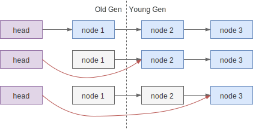

取消
当某个线程在抢锁时因为中断、超时等原因出错时，就需要“取消”抢锁。直觉上，取消等待需要如下操作：
- 将当前节点从等待队列中移除，这样前驱节点就不会尝试唤醒当前节点了
- 有必要时唤醒后继节点，例如移除自己的时候前驱节点执行了唤醒操作，而后继节点错过了
代码实现
AQS 中的取消操作的大致思路类似，代码如下（原代码中的注释也很清晰，建议直接阅读）：
private void cancelAcquire(Node node) {
if (node == null)
return;
// ① 如果前驱节点尝试唤醒 node，在调用 `LockSupport.unpark` 时会忽略 null
node.thread = null;
// ② 查找前驱节点，忽略 CANCELLED 节点（waitStatus > 0 的只有 CANCELLED 状态）
Node pred = node.prev;
while (pred.waitStatus > 0)
node.prev = pred = pred.prev;
// ③ 记录前驱节点的 next 指针，后续的 CAS 中使用，如果 CAS 失败了，代表同
// 时有其它修改 next 指针的操作，如其它的取消操作，则不需要做任何其它操作
Node predNext = pred.next;
// ④ 这里不需要使用 CAS，本身赋值的操作是原子的
// 赋值成功前，因为 thread == null，不会受其它线程的影响
// 赋值成功后，其它节点会忽略当前节点，如 ② 中一样
node.waitStatus = Node.CANCELLED;
// ⑤ 当前节点在等待队列的队尾，尝试从队列中移除自己
// 如果失败则说明有新入队的节点，真正的释放操作在
// shouldParkAfterFailedAcquire 方法中完成
if (node == tail && compareAndSetTail(node, pred)) {
compareAndSetNext(pred, predNext, null);
} else {
// ⑥ 如果后继节点需要被唤醒，先尝试设置前驱节点的 next 指针，当前驱执行
// 唤醒时就能唤醒后继节点。如果失败了则手工唤醒它。
int ws;
if (pred != head &&
((ws = pred.waitStatus) == Node.SIGNAL ||
(ws <= 0 && compareAndSetWaitStatus(pred, ws, Node.SIGNAL))) &&
pred.thread != null) {
Node next = node.next;
if (next != null && next.waitStatus <= 0)
compareAndSetNext(pred, predNext, next);
} else {
unparkSuccessor(node);
}
node.next = node; // help GC
}
}
节点释放
上面的代码中，我们看到只是对节点的 next 的指针有操作，而 pred 没动过，这意味着节点还在队列中，那什么时候会被释放呢？在 shouldParkAfterFailedAcquire 方法中：
private static boolean shouldParkAfterFailedAcquire(Node pred, Node node) {
int ws = pred.waitStatus;
if (ws == Node.SIGNAL)
return true;
if (ws > 0) {
// 节点休眠前要保证将前驱节点的状态改为 SIGNAL
// 当前驱节点处于 CANCELLED 状态时，需要跳过节点向前寻找
// 直到非取消的节点为止（head 节点不可能处于 CANCELLED 状态）
do {
node.prev = pred = pred.prev;
} while (pred.waitStatus > 0);
pred.next = node;
} else {
compareAndSetWaitStatus(pred, ws, Node.SIGNAL);
}
return false;
}
正确性分析（大概）
cancelAcquire 的主要流程“显然”是正确的，不过仔细一想又不太明白为什么。这里我们大致分析一下。
AQS 中的节点能分隔信号，唤醒操作不会跨节点传递，修改前驱的状态也不会跨节点进行。例如队列 head -> t1 -> t2 -> t3 <- tail，前驱节点 t1 的操作不会作用到后继节点 t3，反之亦然。前驱节点t1 的操作只能是唤醒当前节点 t2，后继节点
t3 的操作只能是尝试修改 t2 的 next 指针以及将 t2 的状态成 SIGNAL，而无法修改 t1 的状态。
而对于将要取消的节点来说，被前置唤醒无关紧要；被后继修改 next 指针，修改状态变成 SIGNAL 也不在意，因为状态修改的主要目的是保证自己能唤醒后继，而这在
cancelAcquire 中本来就要处理。
当状态设置成 CANCELLED 之后，前驱的操作依旧不会跨越当前节点，但后续的操作可能忽略取消节点，作用到前驱节点上。但是后继节点（在shouldParkAfterFailedAcquire方法中）跨越 CANCELLED 节点的修改前驱状态，背后的目的也是让前驱能正常唤醒自己。
于是在取消节点尝试唤醒后继节点时，会首先尝试把要唤醒的后继节点托付给前驱节点，前提是它的状态符合预期（如状态是 SIGNAL ）。而如果前驱节点不符合预期，就直接唤醒后续节点，后继节点会尝试抢锁，失败后会再自己找到合适的前驱节点。
help GC
在 AQS 中多次出现设置 next 指针的操作，且注释为 "help GC"，它的作用到底是什么？
如果一个节点不再被引用，那么 GC 算法是可以正常回收它的，正确性没有问题。问题出在性能上。如下图，head 和 node 1 活过一轮 Full GC 被放入老年代中，之后 head 指向了其它节点。

发生 Young GC 时，JVM 会认为 Old Gen 中的对象还活着，于是 node 2 在 Young GC
时会被认为存在引用，不被回收。意味着 node 1 引用的整条链路，虽然已经没用了，却只能等 Full GC 才能回收。相反，如果及时将每个节点的 next 置为 null，则虽然node 1 在 Old Gen 里无法被 Young GC 回收，但其它还在 Young Gen 里的节点能被回收的，整体上减少了 Full GC 的次数。
已经没用却不被 GC 回收的内存也被称为 Floating Garbage。这个问题在 StackOverflow 上有描述，指向的 JDK-6805775 和 JDK-6806875 也有详细的描述，建议阅读。